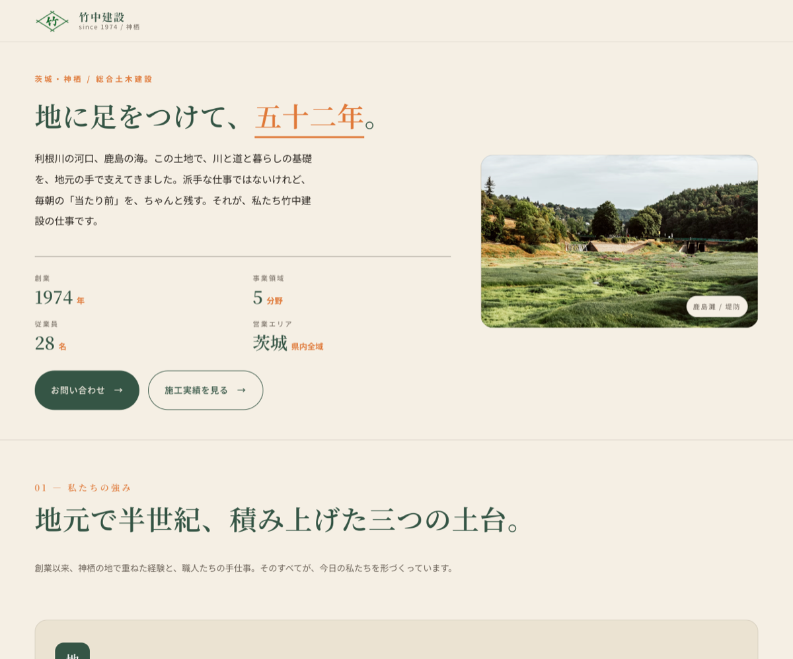
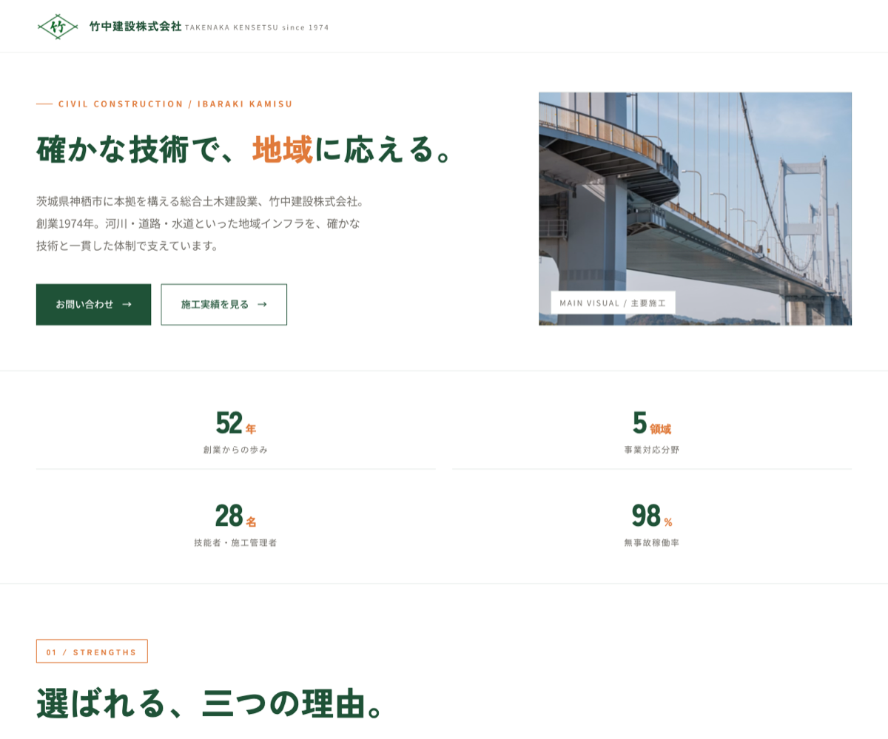
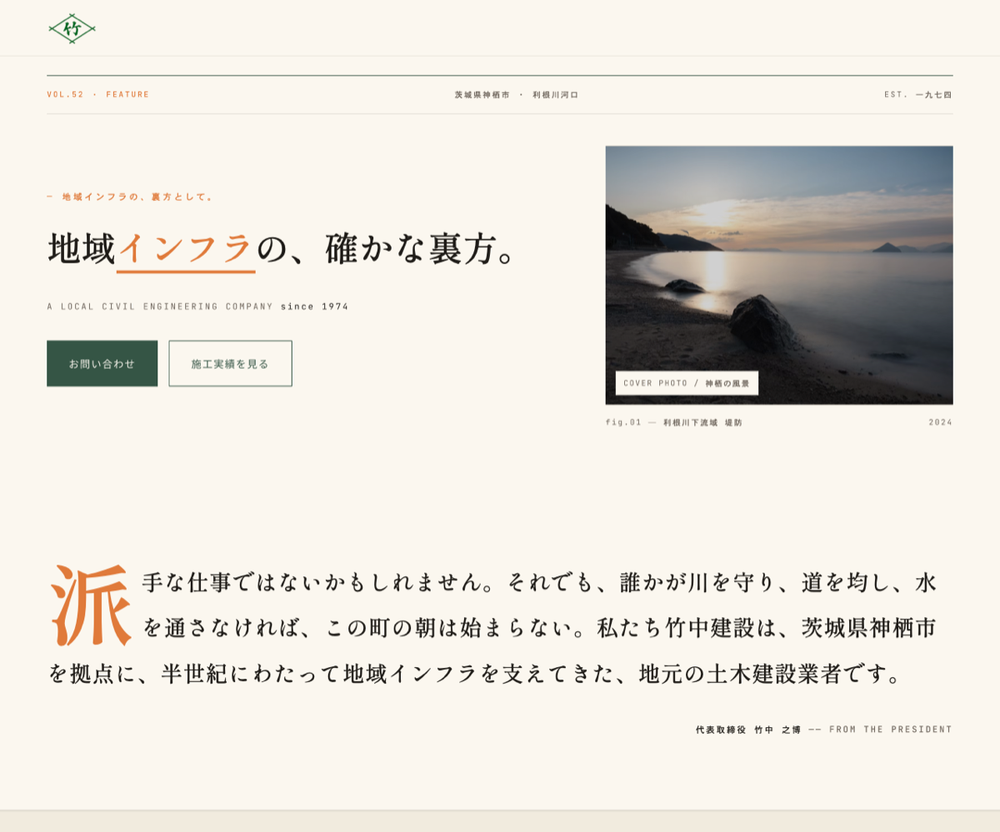
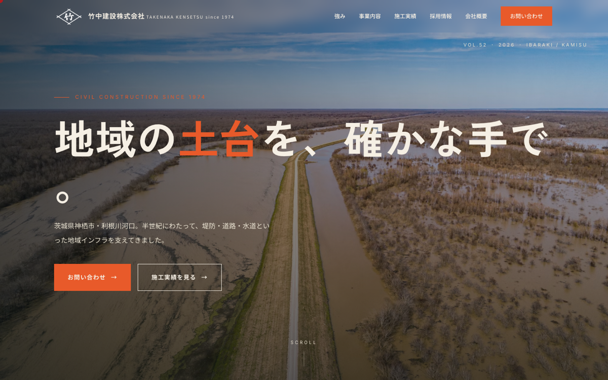

本ページは、竹中建設株式会社様のホームページデザインに関する4案のご提案です。各案ともコンセプト・配色・写真・レイアウトを変えて制作しています。下記の各案カードから、原寸大のプレビューをご確認ください。なお、写真素材はストック素材で仮配置しています（実装時に貴社の実写と差し替え可能です）。

「地に足をつけて、五十二年。」地元密着の実直さを、温かみのある配色と手書き感のある書体で伝えるトーン。地方自治体・地元元請・地域住民との関係性を大切にする企業像。
案1を見る→
「確かな技術で、地域に応える。」シャープな直線とゆったりした余白で、技術力と信頼性を現代的に表現。民間元請・自治体・若手中途求職者への訴求に強いトーン。
案2を見る→
「地域インフラの、確かな裏方。」雑誌・ドキュメンタリーのような編集レイアウトで、企業の物語と人柄を伝えるトーン。文章を読ませる構成、ドロップキャップ、章扉、引用が特徴。
案3を見る→
「地域の土台を、確かな手で。」100vh のフルブリード写真、文字スプリット、Ken Burns、スクロール連動カードなど、リッチなモーションで「技術力の幅」を見せるデモ的な4案目。動きで魅せる体験重視型。
案4を見る→